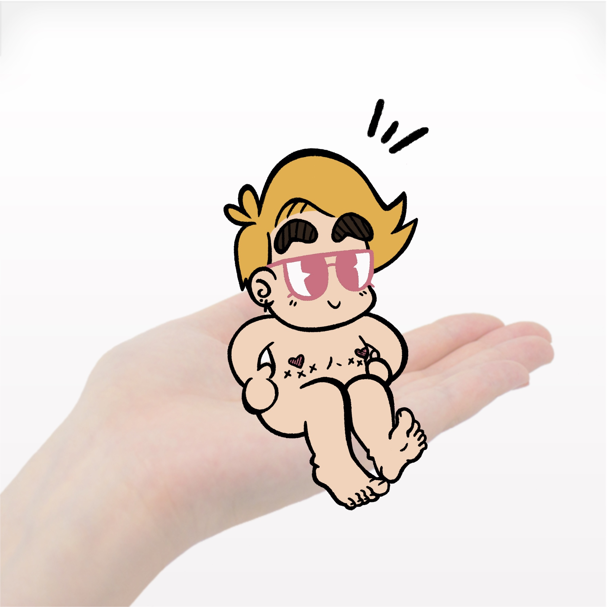

Cartoonist Mitch E. Vicieux
Bio
Howdy! I'm a queer cartoonist from Southern Maryland, currently based in Columbus, OH. My work focuses on the multi-modal potential of comic arts, and how caricaturized forms relate to the trans body. I've earned an MFA in Art & Technology from THE Ohio State University and a BA in Digital Media from St. Mary's College of Maryland. Investigating global cartooning practices, I completed an animation intensive at Accademia Italiana in Florence, Italy, and researched popular culture at the University of Tsukuba in Ibaraki, Japan. In Columbus, I co-founded the Columbus Cartoon Coalition and currently serve as a Navigator for the Greater Columbus Arts Council. In town you'll find me slingin' zines, painting murals, and hanging out in our fabulous Metropolitan Libraries!
Press
GCAC Announces 18 Artists for New Navigator Program- Greater Columbus Arts Council
Premiere - Paul Andrews: "Borrowed Time" Music Video
- Here Comes The Flood
Columbus Makes Art Presents Ohio State MFA Students and Their Thesis Exhibition -Columbus Underground
BEST FILM: Mitch Vicieux for TAPES - Mad Royal Film Festival
BOOGIE/TF BACK UP by Mitch E. Vicieux - Enby Life Magazine
Flyover Fest: No Evil Eye debuts at the Wex - Columbus Monthly
Ohio State students' eclectic gifts shine through in virtual exhibition -The Columbus Dispatch
Studio art program helps artists blossom - The Lantern
Past Exhibitions
Correspond, The Bret Llewellyn Art Gallery at Alfred State College
17 Days Project, Atrium Gallery at Western Michigan University
Animunculi, Blockfort Gallery
Chromatic, Wild Goose Creative
Columbus Moving Image Art Review
God Made Me, Urban Arts Space
NO EVIL EYE, Wexner Center for the Arts